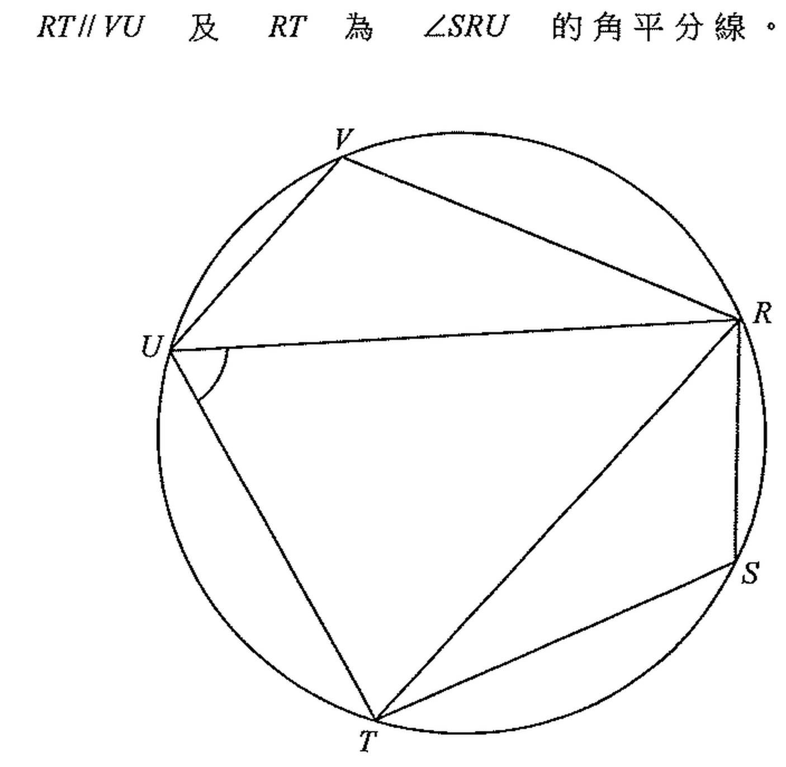
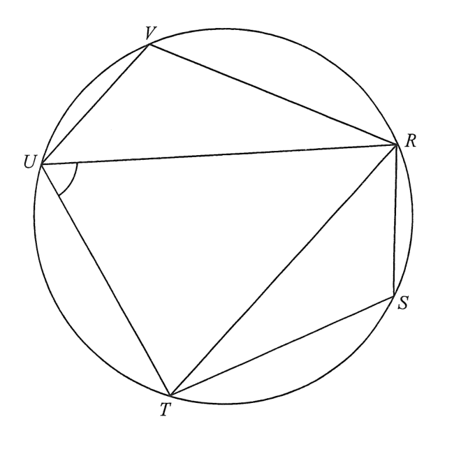

2025 DSE 數學 Paper 2 第 22 題 答案＋詳解＋答對率 41%
官方答案
D
歷年考生答對率：41%（官方統計）
題目（中文卷）
圖中，$RSTUV$ 為一圓。已知 $RT//VU$ 及 $RT$ 為 $\angle SRU$ 的角平分線。若 $\angle RTS=\angle URV=33^\circ$，則 $\angle RUT=$

- A. $36^\circ$。
- B. $49^\circ$。
- C. $65^\circ$。
- D. $71^\circ$。
English version（英文卷題目）
In the figure, $RSTUV$ is a circle. It is given that $RT \parallel VU$ and $RT$ is the angle bisector of $\angle SRU$. If $\angle RTS = \angle URV = 33^\circ$, then $\angle RUT =$

- A. $36^\circ$.
- B. $49^\circ$.
- C. $65^\circ$.
- D. $71^\circ$.
官方題解 / 評卷參考
答案：D
- $\angle RTS=33^\circ$ 所對的弧 $RS=66^\circ$；$\angle URV=33^\circ$ 所對的弧 $UV=66^\circ$。
- $RT\parallel VU\Rightarrow$ 弧 $RV=$ 弧 $TU$（平行弦所夾的弧相等），記為 $a$。
- $RT$ 平分 $\angle SRU\Rightarrow\angle SRT=\angle TRU\Rightarrow$ 弧 $ST=$ 弧 $TU=a$。
- 圓周角總和：$66+a+a+66+a=360\Rightarrow 3a=228\Rightarrow a=76$。
- $\angle RUT$ 所對的弧為弧 $RS+$ 弧 $ST=66+76=142^\circ$，故 $\angle RUT=71^\circ$。
錯項分析：
- A. 只把所求角所對的弧取成 $72^\circ$（用了一半的弧），得 $36^\circ$。
- B. 用錯平行弦的結論（把弧 $RV$ 當成弧 $ST$ 的一半），令總弧數少計。
- C. 漏用「$RT$ 平分 $\angle SRU$」這條件，弧 $ST$ 沒有取成 $a$，令所求角偏小。